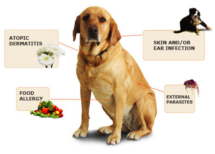

Dog Foods
Dog food refers to food specifically intended for consumption by dogs. Like all carnivorans, dogs have sharp, pointed teeth, and have short gastrointestinal tracts better suited for the consumption of meat. In spite of this natural carnivorous design, dogs have still managed to adapt over thousands of years to survive on the meat and non-meat scraps and leftovers of human existence and thrive on a variety of foods.
Dog Foods Guide
A dog is of a very hot nature: he should therefore never be without clean water by him, that he may drink when he is thirsty. In regard to their food, carrion is by no means proper for them. It must hurt their sense of smelling, on which the excellence of these dogs greatly depends.
Barley meal, the dross of wheatflour, or both mixed together, with broth or skim'd milk, is very proper food. For change, a small quantity of greaves from which the tallow is pressed by the chandlers, mixed with their flour ; or sheep's feet well baked or boiled, are a very good diet, and when you indulge them with flesh it should always be boiled. In the season of hunting your dogs, it is proper to feed them in the evening before, and give them nothing in the morning you take them out, except a little milk. If you stop for your own refreshment in the day, you should also refresh your dogs with a little milk and bread.
Food allergies in dogs
Certain ingredients in dog food are known to be a key cause of allergies. A popular belief among pet owners is that wheat and soybeans are a leading cause of dog allergies, however many studies backed by veterinarians have failed to show wheat and soybeans as major sources of allergies, and in fact blame the meat protein for most allergies: beef, chicken, lamb, etc. A number of "grain free" dog foods are available that claim to alleviate such allergies in dogs, however given the current research that true wheat/grain allergy is rare in dogs, these diets are seen as controversial, gimmicky, or unnecessary by veterinarians. Diets for those dogs allergic to food are made from limited ingredients or hypoallergenic recipes.[unreliable source?] Limited ingredients make it easier to identify the suspected allergens. In hypoallergenic recipes, manufacturers use those ingredients which are less likely to cause alleries to the dogs such as chicken, lamb, fish, and corn. Food allergies account for about 10% of all the allergies seen in dogs, being the most common cause after flea bite allergies and atopy (inhalant allergies). Food allergies generally account for 20% of the causes of itching and scratching in dogs.
Foods dangerous to dog
A number of common human foods and household ingestibles are toxic to dogs, including chocolate solids (theobromine poisoning), onion and garlic (thiosulfate, sulfoxide or disulfide poisoning), grapes and raisins, macadamia nuts, as well as various plants and other potentially ingested materials.